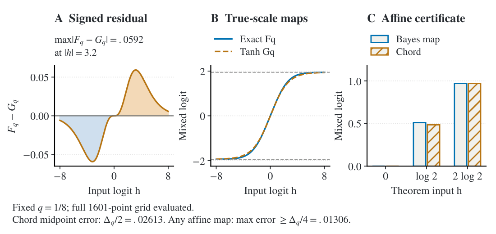

Abstract
Accurate posterior prediction need not require accurate approximation of Bayesian updates. We prove that an unbounded gap between the update maps can coexist with vanishing predictive KL for every fixed finite $K\ge2$ in a stationary symmetric Gaussian HMM. Exact Bayesian mixing and an explicit deterministic radial filter act on the same $K-1$ belief coordinates. As $q\to0^+$, their separation in centered logits in the worst case grows at least linearly in the natural confidence scale $L_K(q)$, while their categorical $D_{\mathrm{KL}}(\mathrm{exact}\Vert\mathrm{radial})$ vanishes at the same explicit witness. Along stationary HMM trajectories, the expected terminal KL between filtered posteriors also converges to zero at $H(q)=\lceil-\log(q)/c\rceil+1$. Typical blocks without switches drive both filters into a common confidence cone, where softmax curvature suppresses their disagreement; a single Gaussian maximal event controls adaptive noise. A sweep with equally spaced Gaussians over $K\in\{2,4,8\}$ illustrates the opposing trends, and binary controls at long horizons compare saturating and nonsaturating recurrences. The result isolates two missing links between internal update gaps and predictive cost: the contribution of separating states to expected loss and decoder sensitivity. Thus even an unbounded internal update gap does not by itself certify predictive failure. The construction is fixed in $K$ and does not provide a universal criterion for when compression is harmless or characterize when internal gaps must incur task loss.
Try it: the gap grows, the prediction does not move
Drag the switch probability. Everything is computed live from Theorem 1.
Results
![Separation at finite scale and decoder saturation. Left pair: centered distance between terminal states grows while categorical $D_{\mathrm{KL}}(\mathrm{exact}\Vert\mathrm{radial})$ falls for Gaussian HMMs with $K=2,4,8$ (4,096 paired paths per cell; 95\% bootstrap intervals). Right pair: KL of the binary controls over ten seeds at $H(q)$ and $\lceil8/q\rceil$ (relative SE $\le3.1\%$), followed by an analytic illustration with a logistic decoder, not sampled trajectories. Nearly equal endpoints are displaced for legibility. Table and Appendix give values, clipping conventions, and estimation details. Measurements illustrate, rather than prove, the asymptotic theorem.](fig2a.png)
Separation at finite scale and decoder saturation. Left pair: centered distance between terminal states grows while categorical $D_{\mathrm{KL}}(\mathrm{exact}\Vert\mathrm{radial})$ falls for Gaussian HMMs with $K=2,4,8$ (4,096 paired paths per cell; 95\% bootstrap intervals). Right pair: KL of the binary controls over ten seeds at $H(q)$ and $\lceil8/q\rceil$ (relative SE $\le3.1\%$), followed by an analytic illustration with a logistic decoder, not sampled trajectories. Nearly equal endpoints are displaced for legibility. Table and Appendix give values, clipping conventions, and estimation details. Measurements illustrate, rather than prove, the asymptotic theorem.
![Separation at finite scale and decoder saturation. Left pair: centered distance between terminal states grows while categorical $D_{\mathrm{KL}}(\mathrm{exact}\Vert\mathrm{radial})$ falls for Gaussian HMMs with $K=2,4,8$ (4,096 paired paths per cell; 95\% bootstrap intervals). Right pair: KL of the binary controls over ten seeds at $H(q)$ and $\lceil8/q\rceil$ (relative SE $\le3.1\%$), followed by an analytic illustration with a logistic decoder, not sampled trajectories. Nearly equal endpoints are displaced for legibility. Table and Appendix give values, clipping conventions, and estimation details. Measurements illustrate, rather than prove, the asymptotic theorem.](fig2b.png)
Separation at finite scale and decoder saturation. Left pair: centered distance between terminal states grows while categorical $D_{\mathrm{KL}}(\mathrm{exact}\Vert\mathrm{radial})$ falls for Gaussian HMMs with $K=2,4,8$ (4,096 paired paths per cell; 95\% bootstrap intervals). Right pair: KL of the binary controls over ten seeds at $H(q)$ and $\lceil8/q\rceil$ (relative SE $\le3.1\%$), followed by an analytic illustration with a logistic decoder, not sampled trajectories. Nearly equal endpoints are displaced for legibility. Table and Appendix give values, clipping conventions, and estimation details. Measurements illustrate, rather than prove, the asymptotic theorem.

Binary transition geometry at $q=1/8$. A: signed residual of exact minus tanh. B: the maps at true scale share saturation levels and midpoint slope. C: values at $0,\log2,2\log2$ certify that the map is not affine; their second difference $\Delta_q$ forces every affine approximation to incur maximum error at least $\Delta_q/4$. This is a fixed-$q$, $K=2$ diagnostic.
BibTeX
@article{wen2026predictor,
title = {How Wrong Can a Good Predictor Be? Diverging Updates with Vanishing Predictive KL},
author = {Wen, Qifu and Liu, Shuaijun and Zhou, Zihan and Zeng, Xi and Su, Ningxin},
journal = {arXiv preprint arXiv:2609.11132},
year = {2026}
}